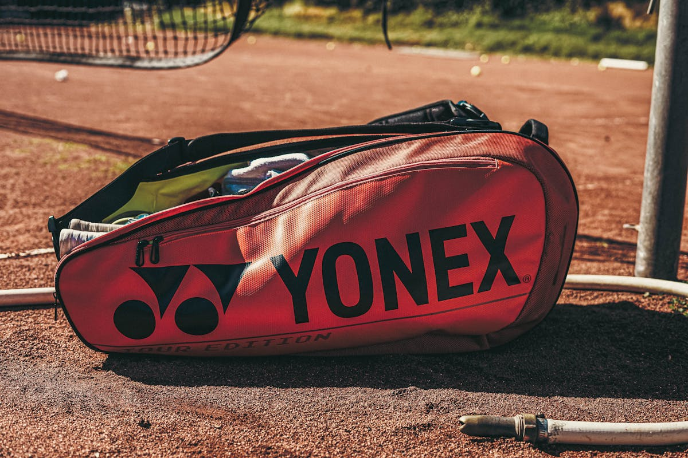

叔式生活风格网球旅行文章合集
共 5 篇单文件 HTML。风格参考来自浏览器读取到的账号主页与 3 篇可见笔记：网球旅行、真实建议、清单结构、直给避坑。

第 1 篇
周末去外地打球，包里这5件我会先放进去
周末网球旅行装备清单

第 2 篇
去南方城市打球，别只看球场好不好看
高温高湿城市网球旅行避坑
第 3 篇
想去网球学院上课，先别急着冲动下单
网球学院短训装备准备

第 4 篇
带球友组一次网旅，到底要准备什么？
球友组局网旅实用装备

第 5 篇
家附近新球场+1，第一次去我会带这5样
新球场试打装备清单
商品入口均为淘宝搜索链接，具体价格、销量和评价请以淘宝页面实时信息为准。